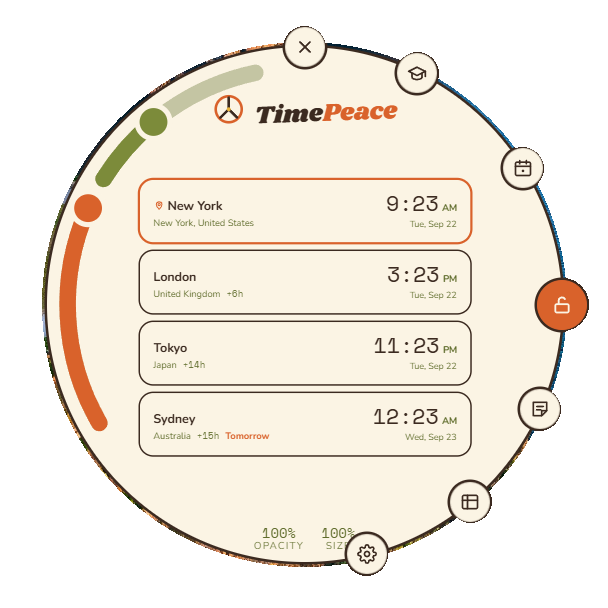

TimePeace
A world clock that lives on your desktop, with a military time trainer, a meeting finder, and sticky notes that pin anywhere.
Already have TimePeace? Download and run the new file: it offers to replace your old one and keeps your cities, looks and notes.
Not signed yet: Windows asks once ("More info", "Run anyway"), Mac wants right click, Open.Download blocked?Windows folder versionAll releases

Download blocked or a virus warning on Windows a false alarm, here is how to let it through
Some antivirus programs flag new unsigned apps that few people have downloaded yet. The quickest way around it is the Windows folder version: unzip it anywhere and run TimePeace.exe inside; scanners rarely object to it. Or let the single file through yourself:
- Click Start, type Windows Security, open it, then Virus & threat protection, then Protection history.
- Find TimePeace-windows.exe, click it, then Actions, then Allow (or Restore).
- Download the Windows file from this page again, open it, and choose More info, then Run anyway.
With McAfee, Norton, Avast, or another product: open it, find Quarantine or History, restore or allow TimePeace, then do step 3. Linux needs WebKitGTK (gir1.2-webkit2-4.1) and a compositing window manager. Not sure which Mac you have? Apple menu, About This Mac.
How to use
Buttons on the rim lock, notes, chart, settings, plan, train, in front or behind, quit
| Icon | Name | What it does |
|---|---|---|
| Lock L | The orange button at 3 o'clock. Locks the disc in place: the tool buttons hide, the disc fades to the level you chose, and clicks pass straight through it to whatever is behind. The lock, the Notes and In front buttons, and both meters stay faintly visible and keep working; press the lock again to unlock. Locking also closes any open window. | |
| Notes N | Opens a new sticky note in its own window. It stays reachable while the disc is locked. See Sticky notes. | |
| Chart C | The military time chart, every hour from 12 AM to 11 PM beside its 24 hour form, with the rule of thumb: before 1 PM the numbers match, from 1 PM on add 12, midnight is 0000 and noon is 1200. | |
| Settings S | Opens Settings in a compact window beside the disc. Every change shows on the clock as you make it. A small red dot pulses on this button when a newer TimePeace is out; Settings, About has the download link. See Settings. | |
| Plan P | The meeting finder. Pick a date, and every city lines up on one 24 hour strip with working hours shaded. Tap a column to pick a time and see what o'clock it is in each city, then copy a one line summary. | |
| Train T | A military time quiz. Choose Regular to Military, Military to Regular, or Mixed, answer in any reasonable form (1530, 15:30, 3:30 pm), and watch your streak, session score, and lifetime stats. Results copy with one press. | |
| Quit | At 12 o'clock. Saves the window position and exits cleanly. Open notes come back next time. | |
| In front or behind | At 5 o'clock. In front keeps the clock above every window. Press it and the clock goes behind them, on the desktop, still ticking. While it is behind, this one button keeps floating above your windows at the same spot, faint until you hover, so one click brings the clock back even with a window covering it. Also in the tray menu. |
The two meters and the keyboard fade, size, and the shortcut keys
| Meter | Where | What it does |
|---|---|---|
| Fade | The arc on the left with the FADE tag beside it. Drag its knob to set how see through the disc becomes when locked; the knob shows the level. It still works while locked. | |
| Size | The arc from 10 to 12 o'clock with the SIZE tag beside it. Drag its knob to scale the whole disc from 60 to 160 percent; the knob shows the percent. Also a slider in Settings, Layout. |
Keyboard
Keys work when the disc has focus (click it first). While locked, the disc does not take keys or clicks, so use the tray icon or the lock button.
Keys work when the disc has focus (click it first). While locked, the disc does not take keys or clicks, so use the tray icon or the lock button.
Sticky notes pin, save, checklists, colors, pen, All notes
Each note is its own small window, always on top. Make one with the Notes button, the N key, the plus on any note, or "New note" in the tray. Drag it by the strip under the pin or by the paper; a sweep across the text selects it.
On the note
| Icon | Name | What it does |
|---|---|---|
| Pin | The red pin at the top. Press it and the note is fixed in place and lets clicks pass through it, so it sits over your work without getting in the way. Only the pin itself still takes a click, to unpin. Pinning an unsaved note saves it first. | |
| New | Asks for a blank note or one with the same paper, text, font, and glow as this note, beside this one. | |
| Save Ctrl+S | Appears once the note has unsaved content. Closing a note with unsaved changes asks "Save this note?" with Yes and No. An empty note leaves no trace when closed. | |
| Menu | Pin or Unpin, Duplicate, All notes, Delete. Delete keeps the note for 30 days with an Undo toast and a Restore action in All notes. | |
| Close | Closes the note window. The note stays in All notes and reopens from there. | |
| Resize | The grip in the bottom corner. Drag to make the paper bigger or smaller; the text reflows. |
Formatting toolbar
| Icon | Name | What it does |
|---|---|---|
| B | Bold Ctrl+B | Bold for the selection or from here on. |
| I | Italic Ctrl+I | Italic. |
| U | Underline Ctrl+U | Underline. |
| Strikethrough | Cross the text out, handy for done items. Ctrl+Shift+S. | |
| Bullets | Press once for dots, again for numbers, a third time for a checklist with boxes, and once more for plain text. Click a box to check it off; that works even on a pinned note. | |
| Aa | Font | Eleven faces: the theme's body, display, and mono fonts, Caveat handwriting, Nunito, Shrikhand, Space Mono, and system faces such as Segoe Print. |
| Pen | Draw on the note with a mouse, pen, or finger. The pen row has colors, a custom color, an eraser, Undo (Ctrl+Z), and Clear ink. Pressure changes the line width on a pen tablet. | |
| Style | Opens the style drawer: nine preset circles (Match theme, Classic yellow, Pink, Mint, Sky, Peach, Lilac, Kraft, Neon night), paper color and opacity, text color and size, and note glow and text glow with their own colors and strength. Colors come from a small chooser with swatches, a hex box, and a More button for the full picker. If a text color could not be read on the paper, it is adjusted and the drawer says so. The glow is a ring around the paper. Every note keeps its curled corner. |
All notes, from the note menu, lists every note with its paper, first line, date, and tags for Open, Closed, Pinned, or Unsaved, with buttons to open or close, pin, and delete. Deleted notes fold away under "Recently deleted". Up to 12 notes can be open at once; the rest wait there, and every note comes back where you left it after a restart.
Settings look, clocks, layout, device, screen
Look
- Theme. Fifteen: Woodstock, Groovy Dark, Night, Vice, Trip, Tie Dye, Flower Power, Lava Lamp, Dashiki, Peace Corps, Fillmore, VW Bus, Sunset Strip, Denim, Polaroid. Each brings its own fonts and colors. The tray icon follows the theme unless you tell it to keep one.
- Appearance. The Fade when locked slider (same as the arc), plus custom widget, text, and accent colors that override any theme, with "Reset colors to theme".
- Neon outline. A glowing outline around the shapes, with its color and glow strength.
Clocks
- Clock. 12h, 24h, or Both (a small military chip next to each time). Show or hide seconds and your own local time.
- Time offset. Slide every clock forward or back by whole hours to answer "what time is it there at 4 my time"; Reset snaps back to now.
- Where you are. "Detect my city" asks your computer for a location once and matches it against the bundled list of cities. Nothing is sent anywhere.
- Cities. Search by city, country, or time zone and add as many as you like. Remove one with its X.
Layout
- Shell. Watch (the round disc) or Panel (a tall card with a header).
- Design. Eighteen ways to show the cities inside the disc: Watch face, Cards, Slim, Soft sheet, Capsule stack, Timeline rail, Daylight bars, Split panel, Dial, Orbit, Day arcs, Floating chips, Bubble cluster, Honeycomb, Postcards, Fanned deck, Typographic, and Ticker tape.
- Sizing. Size from 60 to 160 percent, the Panel width, time size, and the military chip size.
Device
- Start with system, Put an icon on the desktop, Window height (Fit content or Manual, Panel shell), Tray and shortcut icon (Follow theme or Keep current), Restart TimePeace, and Quit.
- About TimePeace. Your version, "Check for updates", the license, and credits.
Screen
- Keep screen awake stops the display from sleeping while TimePeace shows.
Reset to defaults, at the bottom, puts every setting back and keeps your notes.
Reset to defaults, at the bottom, puts every setting back and keeps your notes.
Tray menu show, hide, notes, restart, lock, in front, start with system, quit
Right click the TimePeace icon in the system tray (Windows), menu bar (macOS), or status area (Linux):
- Show and Hide the disc. Show is also a double click on the icon.
- Update available: vX appears only when there is a newer version and opens the download page.
- New note and Close all notes (closing never deletes).
- Bring to screen centers the disc on the monitor under your cursor if it ended up off screen.
- Restart reloads cleanly.
- Locked, click through, In front of other windows, and Start with system are check marks.
- Quit.
What is new in 1.7.1 2026-09-25
Added
- Links in notes: a web or mail address pasted or typed into a note becomes a link (notes written earlier get theirs on the next open). A click shows a small card with Open, Copy and Unlink; Ctrl+click, a middle click, or a pinned note opens at once, in the system browser, never inside the note. Only web and mail addresses are kept as links.
Updates, privacy, and help one request a day, everything stays on your computer
Updates. Once a day, and when you press "Check for updates" in Settings, TimePeace asks this site for the newest version. A newer one shows as a red dot on the Settings button, in Settings, and in the tray, always as a link to this page. Nothing is ever installed on its own; download the new build, run it, and your settings and notes carry over.
Privacy. Everything stays on your computer, in %APPDATA%\TimePeace on Windows, ~/Library/Application Support/TimePeace on macOS, or ~/.config/TimePeace on Linux. The update check is the only network request, and it sends nothing but the app version. Details in PRIVACY.md.
Help. TROUBLESHOOTING.md covers the first start warnings, a disc that went off screen, missing settings, and the log file.